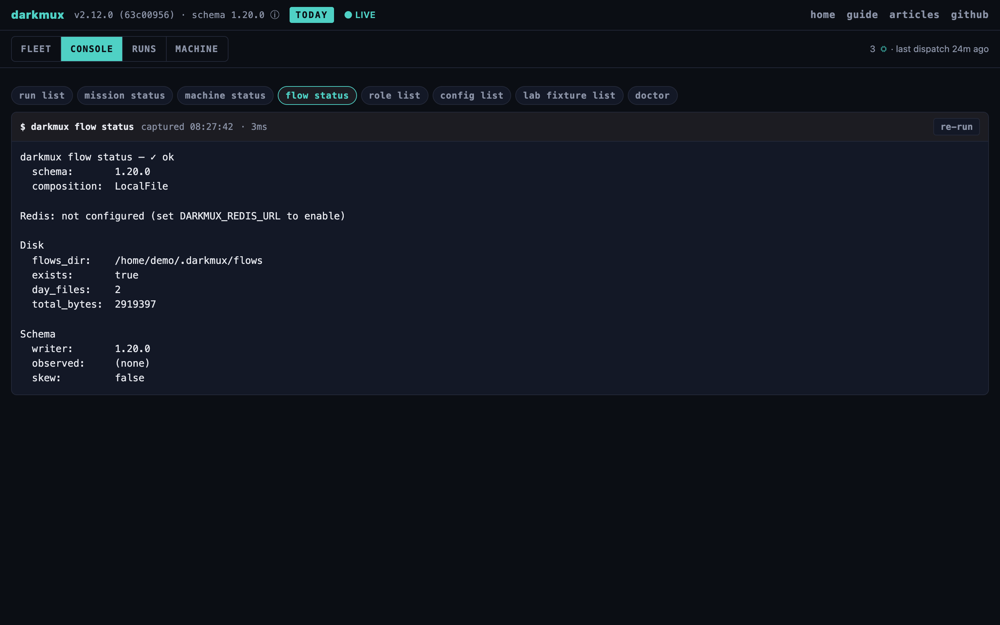

Connect another machine on your tailnet to an existing darkmux hub: many machines, one development environment. This is a clean-machine, brew-only walkthrough: every command after brew install should work as written. Start small (an observability peer you dispatch to directly), and graduate to a full fleet worker when the hardware's ready.
A peer connects to a hub, the always-on machine running Redis. If you haven't set one up, do that first: set up an always-on hub. It's a short, secure, copy/paste recipe (password-less Redis bound to your tailnet, never the public internet). Come back here once darkmux doctor is green on the hub. You'll need two values from it: the hub's tailnet address (tailscale ip -4 on the hub, for the raw Redis check below) and its tailnet DNS name (tailscale status, or the Tailscale admin console — for the roster entry you register with machine add).
A peer can play two roles, and they're a progression. Start with the first; move to the second when you want it.
--profile host@studio, goes straight to the studio's fleet listener, carrying the fleet token. The studio owns host: it resolves the name against its own profiles and loads the model itself. The studio runs it only if the network itself says the request came from a machine on its allow-list, and only on a profile that machine is allowed to use. Anything else is refused at once, with the reason. Nothing is taken off a shared queue: the Redis work queue of earlier releases is retired, and Redis is only the shared record stream now.
On the new machine: install Homebrew and join your Tailscale tailnet (tailscale up). If you'll run dispatches on the peer, also do the base getting-started setup (LMStudio + Docker). Then, confirming it can reach the hub:
# 0. Sanity: can this machine reach the hub over the tailnet?
# HUB_IP is the hub's Tailscale address. Run `tailscale ip -4` ON THE HUB.
HUB_IP=<hub-tailnet-addr>
nc -zvw1 "$HUB_IP" 6379 # expect "succeeded"
# 1. Install darkmux.
brew tap kstrat2001/tap
brew install darkmux
# 2. Declare this machine a peer and point it at the hub's Redis (password-less).
darkmux config set fleet.mode peer
darkmux config set redis.enabled true
darkmux config set redis.host "$HUB_IP"
darkmux config set machine_id mini-1 # operator-named; your call
# 3. Verify it reaches the hub.
darkmux doctordarkmux doctor should read ✓ on flow sink health (a Redis-backed sink reaching the hub) and machine_id, and the verdict banner should land on ● ok (a ⚠ on out-of-scope checks like "no profile loaded yet" is fine). Then prove the end-to-end write:
darkmux flow note --text "hello from mini-1"Open the hub's live viewer (the hub itself, or http://<hub>/ from any device if you set up Tailscale Serve). The note appears, tagged with this machine's id. That's the peer participating: its records flow to the hub, you see the whole fleet in one place.
darkmux command; the peer does not need to run darkmux serve for its activity to show up in the hub's viewer. (The trade-off: without a local daemon, the peer won't appear with a card in darkmux machine list, which asks each machine's daemon for it. Its flow records are still in the hub viewer.)
Short answer for Part 1: no. A darkmux dispatch <role> --profile <profile>@mini-1 … from another machine is sent to mini-1's fleet listener, which only exists inside a running darkmux serve with fleet.listener.enabled on. A Part 1 peer runs neither, so the dispatch fails at once with "no answer from mini-1". It never runs somewhere else instead: the address names the one machine that runs the job.
On the peer, dispatch with a plain profile name (no @). It runs in the peer's own container, sized by you to fit the hardware:
# On the peer:
darkmux dispatch coder "implement the X feature"This is the reliable way to use a small box: drive it directly (in person, or over SSH / its own Claude Code session), pick model profiles that fit its RAM, and let its activity stream to the hub for the fleet-wide view. The dispatch path is identical to the hub's (same container, same runtime loop, same flow records), just initiated on the machine that runs it.
A fleet worker takes work from other machines over its fleet listener: a second port the daemon opens on the machine's own tailnet address (never 0.0.0.0, never loopback, and not behind Tailscale Serve, which would make every caller look like the machine itself). A request is run only when both checks pass:
darkmux-serve-token, or DARKMUX_SERVE_TOKEN), one value shared by every machine in the fleet. The check is that the caller holds that shared token. That keeps out something on an allowed machine that cannot read it (an agent container can reach tailnet addresses, but not the Keychain). It is not proof the caller is darkmux: any process running as your user can read the Keychain item, and machine list sends the same token to every machine in the roster.tailscale whois), and accepts only a node on its own allow-list, fleet.accept_work. Deny by default: a node that is not listed runs nothing, token or not.Each allow-list entry also has a scope: the profiles (on the worker) that machine may run. A profile outside it is refused, and so is a profile that runs on the worker's utility model: utility work (compaction, radio routing) always stays on the machine it serves.
# On the worker (say the studio). The fleet token first, if it has none:
security add-generic-password -U -a "$USER" -s darkmux-serve-token -w # same value on every machine
darkmux config set serve.token_keychain true
# Trust the laptop for two profiles and two roles. The node is looked up on the tailnet by name
# (the laptop's roster address, or --node <its tailnet name>); you never type its id.
darkmux machine trust laptop --profiles host,coder-studio --roles radio-host,coder
# Open the listener (port 8766 by default; use the same port on every machine).
darkmux config set fleet.listener.enabled true
brew services restart darkmux
darkmux doctor 2>&1 | grep -i fleet # fleet token / identity / listener / trust rowsThen, from the laptop (the fleet token in its Keychain too, and the studio in its roster, below):
darkmux dispatch radio-host "summarize today's runs" --profile host@studiohost@studio is an address: host is the studio's own profile, and studio is its machine_id, looked up in the laptop's roster. The laptop needs no profile called host; the studio resolves it, and refuses a name it does not define rather than running its default. An address naming the machine you are on runs there, like a plain name, and everything that depends on where the model runs (for radio's answering seat, whether grounding is withheld from a hosted endpoint) treats it as a plain name too. With --wait (the default) the command returns when the studio's dispatch finishes, with its exit code and output. --no-wait returns as soon as the studio accepts (or queues) the job. A refusal comes back immediately, naming the reason: studio does not accept work from macbook-pro, not in the allow-list scope: profile coder-big, profile nope is not defined on studio, or busy: studio is running other work on that seat (…).
Radio's answering seat takes the same address: darkmux config set radio.answerer_profile host@studio on the laptop sends the answer to the studio. The studio's entry for the laptop needs the radio-host role and the profile, darkmux machine trust macbook-pro --profiles host --roles radio-host, and a refusal reaches the laptop's radio naming host@studio. See the radio guide.
Radio keeps your private context on your machines. When the studio serves the profile itself (a managed profile, one darkmux loads there), radio sends it the full grounding: your config surface, mission board and artifact shelf. The job carries a managed_only boundary, and the studio checks it against the profile it resolves the name to, when the job arrives and again when a queued job gets its seat, so a profile the studio repointed at a hosted endpoint is never sent that context because your laptop’s card was stale. When the studio refuses at that boundary, radio asks once more with the command catalog and --help only and prints one line saying so. The same refusal comes back as a typed code (boundary, alongside not_listed, role_not_allowed, profile_not_allowed, profile_undefined, busy, version and the rest) next to the sentence, so tools read the code, not the words. A machine can also be asked whether a route would work without running anything: a check goes through every gate a real job meets (token, node, allow-list, scope, boundary, seat, version) and answers with what a run would meet, or the refusal it would get. Both machines must run the same darkmux major version; within one, the newer machine reads what the older one writes, and an older machine refuses a newer minor by naming both versions.
Busy is per seat. A job another machine sends to one of the studio's local models holds that model for its run (LM Studio answers one request at a time per model), so a second such job for the same model is busy while one for another model runs beside it. The studio counts only the jobs other machines send: its own dispatches are not counted, and a fleet job that meets one waits inside LM Studio as before. A job on a hosted endpoint runs beside others up to the studio's remote.concurrent_cap (0 for no limit). Past that, the studio's fleet.busy_policy decides: refuse (the default) answers "busy" at once, and queue holds the job until its seat frees, telling the sender it is waiting (at most 4 queued jobs per sending machine). A queued job passes every check again when its seat frees, so machine untrust or removing the sender from the tailnet also stops jobs already waiting. Rotating or removing the fleet token takes effect when the daemon restarts (it reads the token once), and a restart drops the queue anyway. A sender that closes its connection gives its place back within moments; one that vanishes without closing it (a laptop that sleeps, a dropped network) keeps its place until the connection times out, and its job may run if its seat frees first. A job you wait on waits no longer than its connection allows, and one sent with --no-wait waits at most 30 minutes. That window is worked out from the job's timeout, which bounds a single hosted call; an agentic run in a container keeps going as long as it makes progress, so it can outlast the connection. It keeps running on the studio, and the laptop says the answer was lost and names the session to follow. A job that runs out of time is answered busy and never runs. If the connection drops after the studio took the job, the laptop says so and names the session to follow on the studio: the job may still be running there.
darkmux machine untrust laptop takes the laptop back off the list; both verbs take effect on the next request, with no restart. Removing a machine from the tailnet revokes it everywhere, and rotating the fleet token is one secret to redistribute.
What an entry grants, exactly. Roles: only the roles listed (a role is a tool palette; there is no "any role", and utility roles are refused). Images: the job runs on darkmux's own runtime image unless it names one the entry lists with --images. Workspace: --workspace true lets the peer mount any directory under this machine's darkmux worktrees base read-write as the job's workspace, including live worktrees your own git and test commands later run in. In effect that lets the peer run code on this machine, so grant it only to a machine you would give a shell; the default is none. (darkmux does not yet exclude worktrees that local missions are using.) A submitted job never mounts this machine's shared toolchain cache, so nothing it writes is run by your own later dispatches. One job per seat: a trusted peer that keeps resubmitting can keep a seat busy; that is accepted in a model where every trusted peer is yours.
darkmux:work) and re-creates it when it starts, so the unauthenticated queue stays open until no machine runs 3.x. darkmux doctor names any daemon still consuming it. Mixed versions also do not talk: a 4.0 machine sending to a 3.x one gets "no answer" (3.x has no fleet listener), and a 3.x machine's --machine dispatch waits on a queue no 4.0 machine reads, until its timeout.
The sender checks the receiver too. Every request that carries the fleet token (a profile@machine dispatch, machine status/resources <id>, machine list, and the daemon's peer mission-graph proxy) first resolves the roster address, asks Tailscale which node is there, and refuses unless it is a tailnet node; the first contact pins that node in the roster (as machine add does), every later request checks it is the same node, and the connection goes to that verified address. Only this machine's own daemon and loopback (same-host) entries skip the check, and those never receive the token: whatever listens on a loopback port gets nothing (your own daemon does not ask for it from this machine), so reaching a peer through an ssh tunnel with the token is not supported. Anything a peer sends back has its control characters, bidirectional overrides and zero-width characters removed before it is printed; a field shown in a table or on one line also loses its newlines and tabs and is cut to its column, so a peer cannot print a line of its own.
The listener protects itself too: at most 32 connections at once and 6 per peer address (the 4 requests a machine may have in flight plus 2 card reads, so a peer whose waited jobs hold their connections can still read this machine’s card), 3 seconds to send the request headers, at most 4 requests in flight per trusted machine once it is identified, and refusals logged at most 5 per peer per minute (the rest are counted and reported each minute). A node that routes a subnet can spread connections over many addresses, so the per-address cap bounds a single address, not a single node; the per-machine cap applies only after the token and identity checks. A job from another machine is never attributed to one of this machine's missions (its phase id is dropped).
Register each machine in the others' rosters: a sender finds a worker's address there (the host of the roster address, on fleet.listener.port), and machine list shows it. Use each machine's tailnet DNS name, not its IP — a peer that later sits behind Tailscale Serve routes by Host header, so a bare IP gets Tailscale's own 404 even though the daemon is healthy:
# On the hub:
darkmux machine add mini-1 --address <peer-tailnet-dns-name>:8765
# On the peer:
darkmux machine add <hub-id> --address <hub-tailnet-dns-name>:8765
darkmux machine list127.0.0.1:8765 only; the Tailscale Serve recipe proxies a browser to it on :443, a different port, and doesn't expose :8765 on the tailnet. So machine list reads a peer's card from the peer's fleet listener (Part 2: it binds the tailnet address, is the port work is sent to, and can see which machine is asking), and from nowhere else: there is no fallback to the peer's daemon. Enable the listener on every machine you want to see (darkmux config set fleet.listener.enabled true, with the same DARKMUX_SERVE_TOKEN everywhere); a machine with its listener off shows as unreachable with the reason listener_off. The listener authenticates the asker but does not require an allow-list entry for a card read, so a machine that trusts nobody with work is still visible. Keep the roster entry pointed at the DNS name regardless: it's what survives Tailscale Serve sitting in front of that daemon.
Three layers, so the commands above make sense:

darkmux flow status in the console. The sink composition is what makes a fleet a fleet — every machine writing into the same stream.machine_id). That's what flow records carry, what a profile@machine address names, and what a worker's allow-list is keyed by. Who a caller actually IS comes from the network, not from that name.darkmux:flow, the fleet-wide event log; every machine writes, any daemon's /flow endpoint reads. (Before 4.0 it also carried darkmux:work, a job queue any node that could write Redis could fill. That queue is retired; darkmux doctor names it if it is still there, with the command that deletes it.)http://localhost:8765/; with Redis configured it aggregates events from every machine on the shared stream. The demo at darkmux.com/demo shows the bundled showcase. darkmux machine list is the same per-machine view from the terminal.darkmux machine listMACHINE LIVE AI-HEADROOM OS VERSION LOADED
laptop live 78 GB macos aarch64 5.0.0 darkmux:qwen3.6-35b-a3b-mlx
profiles: deep (managed), cloud (unmanaged); thermal: nominal
studio live 12 GB macos aarch64 5.0.0 darkmux:qwen3-4b-instruct
profiles: deep (managed); seats (jobs from other machines only): 0 local held, hosted 0/1, 0 waiting, busy policy queue; thermal: nominal
accepts from this machine: profiles deep; roles radio-host
old-mini live - - 4.9.1 card unavailable (peer 4.9.1, from presence; no card route)The first row is always this machine, whether or not your roster names it. Each row is the machine's card: what that machine says about itself, fetched from the peer's fleet listener (GET /fleet/card) over the verified peer path (never from Redis), in parallel, with a short timeout. The listener is the one channel a card travels on, so a machine is visible to its peers while its listener runs, whether or not it lets them run anything. The card carries the specs (AI-HEADROOM is the RAM the peer reports as available for model residency, not its total free RAM), its profiles and whether darkmux manages each one's endpoint (managed means darkmux loads the model, unmanaged means it only sends requests), its seats, and its thermal state and battery gate. The seat line counts only jobs other machines sent: a machine’s own dispatches are not seen by its listener, so a seat with no peer job on it may still be busy, and nothing here says “free”. Under each machine, accepts from this machine says what the peer lets you run (profiles deep; roles radio-host), does not list this machine says the peer has no entry for you (fix it on the peer with darkmux machine trust) while still showing its card, and unknown means the peer could not say. LIVE comes from presence and is display only: none means no live beat was found and the peer was asked anyway, and ? means presence is off or unreadable. A machine on an older darkmux shows card unavailable with why (no card route, unreadable card schema or its card did not parse) and its version, marked from presence when the peer did not state it; a machine whose address answers with another machine’s card shows answered as <name> and its card is not used; a machine that cannot be asked shows unreachable with a typed reason: a name that does not resolve, an identity tool that is down, an address that is not a tailnet node, a pin that does not match, a fleet listener that did not answer (turn it on with fleet.listener.enabled), one that refused this machine, or one that did not accept this machine’s fleet token. Every daemon serves the same view at GET /fleet/view (cached for 5 seconds; accepts goes only to this machine, and seats only to this machine or a token holder), and machine list --json prints it; with no daemon running here, machine list gathers it itself and says this machine’s seats, thermal state and battery are not observed. Only machines running a daemon, meaning Part 2 workers or the hub, appear with a card; Part 1 observability peers show their records in the viewer but not here.
The card also states the machine's declared role, so nobody has to ask it: fleet_mode (standalone, hub or peer, from fleet.mode) and whether its own redis.host is that machine. The fleet card and the machine page show a HUB badge on the machine whose card declares hub; presence beats and machine.telemetry records carry the same word. Only the hub's card carries fleet defaults (darkmux config set fleet.defaults.radio.answerer_profile deep@studio on the hub), which a machine with no setting of its own takes; see radio. darkmux doctor's fleet hub row checks that exactly one machine declares hub and that it is the machine this machine's redis.host points at.
Work submission checks two things itself: the fleet token, and the sending node as Tailscale reports it against the worker's allow-list. Everything else leans on your tailnet as the boundary: the fleet's Redis record stream carries no auth beyond what your tailnet and the Redis bind provide, and provenance fields in records are operator-asserted. This works because everyone on the substrate is you. Multi-tenant deployment is explicitly out of scope; see DESIGN.md.
The substrate degrades gracefully. Knowing the modes saves you confused debugging.
The most common failure. Peers' flow writes fall back to local-file-only (records still land on disk per-machine; the Redis sink errors are logged + skipped). Work submission does not go through the hub, so a dispatch between two other machines keeps working. darkmux doctor reports the Redis sink unreachable. An open viewer tab's live tail retries for a bounded budget (~5s), emits a synthetic stream.error, and closes cleanly rather than spinning forever. Recovery: bring the hub back; the substrate self-heals on the next operation, no manual intervention.
The refusal names the reason, and each has one fix. The fleet token is missing or does not match: both machines need the same serve token. does not accept work from <node>: on the worker, darkmux machine trust <name> --profiles …. not in the allow-list scope: add the profile to that entry, or send --profile with one in scope. cannot tell which machine sent this request: Tailscale is not answering on the worker. did not come from a node on the tailscale network: the sender reached the worker some other way (the LAN); use the tailnet DNS name in the roster. this is <x>, not <y>: the sender's roster points at the wrong host. A routed dispatch also emits a dispatch.route flow record on the sender (target_machine, decision).
"no answer from http://…:8766" means nothing is listening there: the worker's listener is off, its daemon is not running, or the two machines use different fleet.listener.port values. darkmux doctor on the worker has a fleet listener row.
Out of scope. machine_id is per-machine, not per-user. If you need per-user provenance on a shared Mac, darkmux has outgrown its target: fork it.